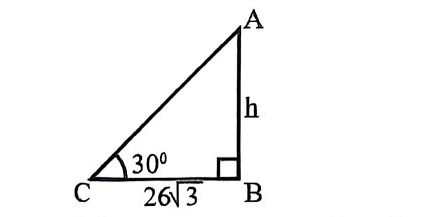
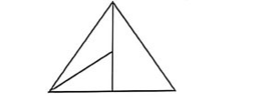
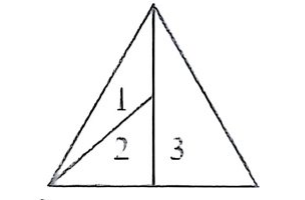
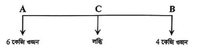

৪৮তম (বিশেষ) বি.সি.এস. প্রিলিমিনারি পরীক্ষা — সহকারী সার্জন (৯ম গ্রেড) ২০২৫ (পরীক্ষার তারিখ: ১৮ জুলাই ২০২৫)
বিসিএস ও নন-ক্যাডার প্রশ্ন বিশ্লেষণ ছক
পরীক্ষার নাম ও পদ
তারিখ
বাংলা
ইংরেজি
বাংলাদেশ বিষয়াবলি
আন্তর্জাতিক বিষয়াবলি
গাণিতিক যুক্তি ও মানসিক দক্ষতা
মোট প্রশ্ন
৪৮তম (বিশেষ) বি.সি.এস. — সহকারী সার্জন
১৮.০৭.২০২৫
২০
২০
২০
২০
২০
100
প্রথম অংশ: প্রামাণ্য ইন্টারেক্টিভ রিভিশন নোট ও সূত্রাবলি
১. বাংলা ভাষা ও সাহিত্য প্রামাণ্য সংকলন (Bengali Literature & Grammar)
• ফররুখ আহমদ (১৯১৮-১৯৭৪): মুসলিম রেনেসাঁর কবি। তাঁর সর্বশ্রেষ্ঠ কাব্যগ্রন্থ ‘সাত সাগরের মাঝি’ (১৯৪৪)। অন্যান্য গ্রন্থ: সিরাজাম মুনীরা, নৌফেল ও হাতেম, হাতেমতায়ী ইত্যাদি।
• শাহ্ মুহম্মদ সগীর: বাংলা সাহিত্যের প্রথম মুসলিম কবি। গৌড়ের সুলতান গিয়াসউদ্দিন আজম শাহের রাজত্বকালে (১৩৯৩-১৪০৯) তিনি রোমান্টিক প্রণয়কাব্য ‘ইউসুফ-জোলেখা’ রচনা করেন। ড. মুহম্মদ এনামুল হক তাঁর কাব্যে ব্যবহৃত উপভাষা পর্যালোচনা করে তাঁকে চট্টগ্রামের অধিবাসী গণ্য করেন।
• শ্রীকৃষ্ণকীর্তন কাব্য: মধ্যযুগের বাংলা ভাষায় রচিত প্রথম কাব্যগ্রন্থ। রচয়িতা বড়ু চণ্ডীদাস। বসন্তরঞ্জন রায় বিদ্বদ্বল্লভ ১৯০৯ সালে বাঁকুড়ার কাঁকিল্যা গ্রামের দেবেন্দ্রনাথ মুখোপাধ্যায়ের গোয়ালঘর থেকে পুথিটি আবিষ্কার করেন (প্রকাশ ১৯১৬)। কাব্যের মোট খণ্ড ১৩টি (প্রথম খণ্ড: জন্মখণ্ড, শেষ খণ্ড: রাধাবিরহ)।
• কাজী নজরুল ইসলাম: ‘আজ চারদিক হতে ধনিক বণিক শোষণকারীর জাত, ও ভাই / জোঁকের মতন শুষছে রক্ত, কাড়ছে থালার ভাত।’ চরণটি নজরুলের বিখ্যাত ‘সর্বহারা’ কাব্যের অন্তর্গত।
• সৈয়দ ইসমাইল হোসেন সিরাজী: মুসলিম জাগরণমূলক কাব্যগ্রন্থ ‘অনল প্রবাহ’ (১৯০০) ব্রিটিশ বাংলা সরকার ১৯০৯ সালে রাজদ্রোহের অভিযোগে বাজেয়াপ্ত করে এবং তাঁকে কারাদণ্ড দেওয়া হয়।
• যৌগিক স্বরধ্বনি (দ্বিস্বর / সন্ধিস্বর): পাশাপাশি দুটি স্বরধ্বনি মিলে একটি সংযুক্ত স্বররূপে উচ্চারিত হলে তাকে যৌগিক স্বরধ্বনি বলে। বাংলা ভাষায় যৌগিক স্বরধ্বনির সংখ্যা ২৫টি (যৌগিক স্বরবর্ণ ২টি: ঐ = অ+ই, ঔ = অ+উ)। যেমন: আ+উ = আউ (লাউ, জাউ)।
• ধাতু ও ক্রিয়াপদ: ক্রিয়াপদের মূল অবিভাজ্য অংশকে ধাতু বা ক্রিয়ামূল বলে। ক্রিয়াপদ = ক্রিয়ামূল + ক্রিয়াবিভক্তি।
• ছন্দের রূপভেদ: স্বরবৃত্ত ছন্দকে ছড়ার ছন্দ বলা হয়। এর মূল পর্বের মাত্রা সংখ্যা ৪ এবং পাঠরীতি দ্রুত ও লঘু তানযুক্ত।
২. ইংরেজি সাহিত্য ও ব্যাকরণ সূত্রাবলি (English Literature & Grammar Mastery)
• Christopher Marlowe (1564–1593): শেক্সপিয়র-পূর্ব এলিজাবেথীয় ট্র্যাজেডির জনক। বিখ্যাত ট্র্যাজেডি: The Tragical History of Doctor Faustus, Tamburlaine the Great, The Jew of Malta, Dido, Queen of Carthage.
• John Milton (1608–1674): ইংরেজি সাহিত্যের অবিসংবাদিত মহাকবি। অন্ধাবস্থায় অমিত্রাক্ষর ছন্দে (Blank Verse) রচনা করেন কালজয়ী মহাকাব্য Paradise Lost (1667) এবং এর পরবর্তী খণ্ড Paradise Regained (1671) ও ট্র্যাজেডি Samson Agonistes.
• John Keats (1795–1821): রোমান্টিক যুগের বিশিষ্ট কবি ("Poet of Beauty")। কালজয়ী ওডসমূহ: Ode on a Grecian Urn, Ode to a Nightingale, To Autumn, Ode on Melancholy.
• Charles Dickens (1812–1870): ভিক্টোরিয়ান যুগের বিখ্যাত সমাজবাস্তবতাবাদী ঔপন্যাসিক। গ্রন্থসমূহ: Oliver Twist, David Copperfield, A Tale of Two Cities, Great Expectations, Hard Times.
• William Golding (1911–1993): নোবেল বিজয়ী সাহিত্যিক। বিখ্যাত রূপকধর্মী উপন্যাস (Allegorical novel) Lord of the Flies (1954).
• Preposition & Idiom Rules:
– Solution to the problem (নির্দিষ্ট সমস্যার সমাধান)।
– Resemble transitive verb হওয়ায় এরপরে কোনো preposition বসে না (He resembles his father, not resembles with/to/like)।
– Because of prepositional phrase (noun/noun phrase গ্রহণ করে); পক্ষান্তরে because / since / as হলো conjunction (clause গ্রহণ করে)।
– French leave: Leave without permission (অনুমতি ব্যতিরেকে প্রস্থান)।
– Take to task: To rebuke or scold someone severely (কঠোর তিরস্কার করা)।
৩. বাংলাদেশ ও আন্তর্জাতিক বিষয়াবলি সংকলন (Bangladesh & International Affairs)
• ভারসাম্যের নীতি (Principle of Moments): ভারসাম্য বিন্দু C হলে, W_A × AC = W_B × BC ⇒ 6 × 6 = 4 × x ⇒ x = 9 মিটার।
দ্বিতীয় অংশ: বিগত বছরের প্রামাণ্য প্রশ্নব্যাংক ও ইন্টারঅ্যাক্টিভ কুইজ
স্কোর: ০ / 100 (০%)
1.
ফররুখ আহমদের ‘সাত সাগরের মাঝি’ কত সালে প্রকাশিত হয়?
সঠিক উত্তর: ঘ
ব্যাখ্যা / সমাধান:
ফররুখ আহমদের শ্রেষ্ঠ কাব্যগ্রন্থ ‘সাত সাগরের মাঝি’। এটি ১৯৪৪ সালে প্রকাশিত হয়।
2.
কোন দেশের গৃহযুদ্ধের কারণে ইউরোপজুড়ে অভিবাসী সংকট সৃষ্টি হয়েছে?
সঠিক উত্তর: ক
ব্যাখ্যা / সমাধান:
ইউরোপের অভিবাসী সংকট বলতে মূলত সিরিয়া, ইরাক ও আফগানিস্তানের মতো দেশগুলোতে যুদ্ধ ও অস্থিরতার কারণে বিপুল সংখ্যক মানুষ ইউরোপে আশ্রয়প্রার্থী হিসেবে আসার ঘটনাকে বোঝায়। এই সংকটটি ২০১৫ সালে তীব্র আকার ধারণ করে। এই অভিবাসীদের মধ্যে বেশিরভাগই ছিল সিরিয়ার নাগরিক। তবে ২০১৫ সালের দিকে সিরিয়ার গৃহ যুদ্ধের ফলে তীব্র অভিবাসী সংকট সৃষ্টি হয়।
3.
কোন ঘটনার কারণে ধরিত্রী দিবসের সূচনা হয়?
সঠিক উত্তর: গ
ব্যাখ্যা / সমাধান:
ধরিত্রী দিবস (Earth Day) এর সূচনা একটি গুরুত্বপূর্ণ পরিবেশ দূষণজনিত ঘটনার পরিপ্রেক্ষিতে হয়েছিল। ১৯৬৯ সালে যুক্তরাষ্ট্রের ক্যালিফোর্নিয়ার সান্তা বারবারা উপকূলে এক বিশাল তেল নিঃসরণ দুর্ঘটনা (oil spill) ঘটে, যা হাজার হাজার সামুদ্রিক প্রাণী ধ্বংস করে এবং পরিবেশের ব্যাপক ক্ষতি করে। এই ভয়াবহ ঘটনার পরে মার্কিন যুক্তরাষ্ট্রের তৎকালীন সেনেটর গেইলর্ড নেলসন (Gaylord Nelson) পরিবেশ রক্ষার প্রয়োজনীয়তা উপলব্ধি করে একটি গণজাগরণের পরিকল্পনা করেন। এরপর ১৯৭০ সালের ২২ এপ্রিল প্রথম ধরিত্রী দিবস পালিত হয়, যার উদ্দেশ্য ছিল পরিবেশ বিষয়ে গণসচেতনতা সৃষ্টি করা। এই দিবসটি এখন বিশ্বব্যাপী পরিবেশ সুরক্ষার প্রতীক হিসেবে পালিত হয়।
টেকসই উন্নয়ন লক্ষ্য (এসডিজি) অর্জনে নিচের কোনটির গুরুত্ব সবচেয়ে বেশি?
সঠিক উত্তর: ঘ
ব্যাখ্যা / সমাধান:
টেকসই উন্নয়ন লক্ষ্য (এসডিজি) অর্জনের মূল লক্ষ্য ১৭টি। যা ২০১৫ সালে গৃহীত হয়। উল্লেখযোগ্য লক্ষ্যসমূহ হলো ক্ষুধা মুক্তি (১), লিঙ্গ সমতা (৪), অসমতার হ্রাস (১০), জলবায়ু কার্যক্রম (১৩), শান্তি, ন্যায়বিচার ও কার্যকর প্রতিষ্ঠান (১৬) ও অভীষ্ট অর্জনে অংশীদারিত্ব।
6.
Doctor Faustus is ______.
সঠিক উত্তর: খ
ব্যাখ্যা / সমাধান:
Doctor Faustus (সম্পূর্ণ নাম The Tragical History of the Life and Death of Doctor Faustus) হলো একটি tragedy, যা ইংরেজ নাট্যকার Christopher Marlowe রচিত। এই নাটকে Faustus নামক এক জার্মান স্কলার শয়তানের সঙ্গে চুক্তি করে অতিপ্রাকৃত ক্ষমতা অর্জনের চেষ্টা করে, এবং শেষ পর্যন্ত নিজের আত্মা হারায়। Marlowe এর বিখ্যাত নাটকগুলো- Tamburlaine the Great, The Jew of Malta, Dido, Queen of Carthage, Massacre at Paris ইত্যাদি।
7.
‘যে আলোতে কুসুম ফোটে’ -এককথায় কী হবে?
সঠিক উত্তর: খ
ব্যাখ্যা / সমাধান:
যে আলোতে কুমুদ ফোটে = কৌমুদী। কৌমুদী শব্দের অর্থ চাঁদের আলো, জ্যোৎস্না। এটি একটি বিশেষ্য পদ। (প্রশ্নে কুসুম শব্দটি কুমুদ অর্থে ব্যবহৃত)
8.
নিচের কোনটি যেকোনো সেটের উপসেট?
সঠিক উত্তর: ক
ব্যাখ্যা / সমাধান:
উপসেটের সংজ্ঞা অনুসারে, ফাঁকা সেট সকল সেটের উপসেট। উপসেটকে নিম্নোক্ত দুই প্রকারে প্রকাশ করা হয় ∅ এবং { }। ∴ নির্ণেয় সমাধান: ∅
9.
কোনটি উন্নয়ন কার্যক্রমে ঋণ সহায়তাকারী সংস্থা?
সঠিক উত্তর: ঘ
ব্যাখ্যা / সমাধান:
উন্নয়ন কার্যক্রমে ঋণদানকারী বা ঋণ সহায়তা দানকারী সংস্থা হলো এমন প্রতিষ্ঠান যারা বিভিন্ন উন্নয়নমূলক কর্মকাণ্ডে অর্থায়ন করার জন্য ঋণ প্রদান করে। যেমন: বিশ্বব্যাংক, এশীয় উন্নয়ন ব্যাংক ও ইউরোপীয় ইউনিয়ন ইত্যাদি।
10.
John Keats wrote ______.
সঠিক উত্তর: খ
ব্যাখ্যা / সমাধান:
John Keats ছিলেন একজন ইংরেজ রোমান্টিক কবি। তিনি অনেক 'Ode' বা স্তবকবদ্ধ কবিতা লিখেছেন, যার মধ্যে "Ode on a Grecian Urn" অন্যতম শ্রেষ্ঠ। John Keats-এর বিখ্যাত কবিতাগুলো- Ode to a Nightingale, Ode on Melancholy, To Autumn ইত্যাদি। Ode to the West Wind রচনা করেছেন P. B. Shelley. Tintern Abbey লিখেছেন William Wordsworth. The Rime of the Ancient Mariner Samuel Taylor Coleridge এর বিখ্যাত কবিতা।
11.
The passive form of the sentence, “Who did the work”? is-
সঠিক উত্তর: গ
ব্যাখ্যা / সমাধান:
এখানে 'Who' হলো subject, 'did' হলো past tense auxiliary verb এবং 'the work' হলো object. Active: Who + verb + object? Passive: By whom was/were + object + past participle? Passive sentence: By whom was the work done?
12.
নিচের কোন প্রতিষ্ঠান বাংলাদেশের ২১শে ফেব্রুয়ারির শহিদ দিবসকে ‘আন্তর্জাতিক মাতৃভাষা দিবস’ হিসেবে স্বীকৃতি প্রদান করে?
সঠিক উত্তর: খ
ব্যাখ্যা / সমাধান:
১৯৯৯ সালের ১৭ নভেম্বর, ইউনেস্কোর ৩০তম সম্মেলনে ১৮৮টি দেশের সমর্থনে একুশে ফেব্রুয়ারি 'আন্তর্জাতিক মাতৃভাষা দিবস' হিসেবে স্বীকৃতি পায়। ২০০০ সালে UNESCO এর ১৮৮টি দেশ প্রথম বারের মতো 'আন্তর্জাতিক মাতৃভাষা দিবস' পালন করে।
13.
কোন শব্দে দ্বিস্বরধ্বনি রয়েছে?
সঠিক উত্তর: গ
ব্যাখ্যা / সমাধান:
দ্বিস্বর ধ্বনি: পাশাপাশি দুটি স্বরধ্বনি থাকলে দ্রুত উচ্চারণের সময় তা একটি সংযুক্ত স্বরধ্বনি রূপে উচ্চারিত হয়। এই রূপে একসঙ্গে উচ্চারিত দুটি মিলিত স্বরধ্বনিকে বলা হয় যৌগিক স্বরধ্বনি। যৌগিক স্বরধ্বনির অপর নাম দ্বিস্বর/যুগ্মস্বর/যৌগিক স্বর/সন্ধিস্বর/সান্ধ্যক্ষর। বাংলা বর্ণমালায় যৌগিক স্বরধ্বনির সংখ্যা ২৫টি। যথা: আ+উ = আউ; উদাহরণ: লাউ, জাউ।
14.
কমনওয়েলথ কোন ধরণের দেশ নিয়ে গঠিত?
সঠিক উত্তর: ক
ব্যাখ্যা / সমাধান:
কমনওয়েলথ প্রতিষ্ঠার প্রথম পদক্ষেপ ছিল ১৯২৬ সালের বেলফোর ঘোষণা। পরবর্তীতে আধুনিক কমনওয়েলথ প্রতিষ্ঠিত হয় ১৯৪৯ সালে (লন্ডন ঘোষণার মাধ্যমে)। ইংরেজ শাসন থেকে স্বাধীনতা প্রাপ্ত দেশসমূহ নিয়ে কমনওয়েলথ গঠিত হয়। বর্তমানে কমনওয়েলথের মোট সদস্য রাষ্ট্র ৫৬টি।
15.
বাংলাদেশের কর্ণফুলি নদীর উৎপত্তিস্থল কোথায়?
সঠিক উত্তর: ক
ব্যাখ্যা / সমাধান:
কর্ণফুলী নদী ভারতের মিজোরামের লুসাই পাহাড় থেকে উৎপত্তি হয়ে রাঙামাটি জেলা দিয়ে বাংলাদেশে প্রবেশ করে এবং বঙ্গোপসাগরে পতিত হয়েছে। এর প্রধান উপনদীগুলো হলো কাসালং, হালদা, বোয়ালখালী ও কাপ্তাই।
16.
She succeeded ______ her good work.
সঠিক উত্তর: গ
ব্যাখ্যা / সমাধান:
Because of একটি preposition, যার পরে noun/noun phrase বসে। এখানে 'her good work' একটি noun phrase তাই 'because of' সঠিক। যেমন: He failed because of his carelessness. Because, since, as এগুলো conjunction, অর্থাৎ এগুলোর পরে subject + verb থাকে।
17.
Choose the correct sentence:
সঠিক উত্তর: গ
ব্যাখ্যা / সমাধান:
Resemble একটি transitive verb, অর্থাৎ এটি সরাসরি একটি object গ্রহণ করে -এর পর কোনো preposition (যেমন: like, with, to) ব্যবহৃত হয় না। গঠন: Subject + resemble + object. যেমন: She resembles her mother.
18.
Who composed “Paradise Lost”?
সঠিক উত্তর: ঘ
ব্যাখ্যা / সমাধান:
Paradise Lost একটি বিখ্যাত epic poem (মহাকাব্য) যা John Milton ১৬৬৭ সালে রচনা করেন। এটি ইংরেজি সাহিত্যের সর্বশ্রেষ্ঠ মহাকাব্যগুলোর একটি, যেখানে আদম ও ইভ এর পাপ ও স্বর্গচ্যুতির কাহিনি বর্ণিত হয়েছে। Milton এর আরও রচনা: Paradise Regained, Samson Agonistes, Areopagitica, Lycidas, On His Blindness etc.
19.
প্রত্যয়যোগে গঠিত শব্দ কোনটি?
সঠিক উত্তর: ক
ব্যাখ্যা / সমাধান:
ডাক্তারখানা (ডাক্তার + খানা), অনুগমন (অনু + √গম্ + অন) ও সম্রাট (সম + √রাজ্ + ক্বিপ) তিনটি শব্দই প্রত্যয়যোগে গঠিত। এখানে দিলখোলা বাদে সবগুলোই উত্তর হবে।
20.
একটি গাছের পাদদেশ হতে 26√3 মিটার দূরে একটি স্থানে গাছটির শীর্ষের উন্নতি কোণ 30° হলে, গাছটির উচ্চতা কত মিটার?

সঠিক উত্তর: গ
ব্যাখ্যা / সমাধান:
মনে করি, গাছটির উচ্চতা, AB = h মিটার। গাছের পাদদেশ হতে দূরত্ব, BC = 26√3 মিটার এবং উন্নতি কোণ ∠ACB = 30° সমকোণী ত্রিভুজ ABC হতে, tan 30° = AB / BC ⇒ 1/√3 = h / (26√3) ⇒ h = 26 মিটার।
21.
‘তিনি কথা বললেন না।’ - বাক্যটির অস্তিবাচক রূপ কী হবে?
সঠিক উত্তর: ঘ
ব্যাখ্যা / সমাধান:
‘তিনি কথা বললেন না।’ বাক্যটির অস্তিবাচক (হ্যাঁ-বোধক) রূপ ‘তিনি চুপ করে থাকলেন’।
22.
‘টঙ্ক (Tonk) আন্দোলন’ কি?
সঠিক উত্তর: খ
ব্যাখ্যা / সমাধান:
টঙ্ক আন্দোলন বাংলার কৃষকদের অধিকার আদায়ের একটি অন্যতম আন্দোলন। তৎকালীন উত্তর ময়মনসিংহ অঞ্চলে এই আন্দোলন ব্যাপক আকার ধারণ করে এবং ১৯৫০ সালে টঙ্ক প্রথা ও জমিদারী প্রথা উচ্ছেদের মাধ্যমে এই আন্দোলনের সমাপ্তি হয়।
23.
‘অন্তর্ভুক্তিমূলক’ শব্দ উচ্চারণে কয়টি অক্ষর পাওয়া যায়?
ব্যাখ্যা / সমাধান:
শুদ্ধ বাক্যটি হলো: সারা দেশে দিবসটি উদযাপন করা হবে। কারণ 'সারা' ও 'ব্যাপী' একসাথে প্রয়োগ করলে বাহুল্য দোষ ঘটে।
25.
What is the meaning of ‘French leave’?
সঠিক উত্তর: গ
ব্যাখ্যা / সমাধান:
French leave বলতে বোঝায় অনুমতি না নিয়ে চলে যাওয়া বা চুপিচুপি কোথাও চলে যাওয়া। এটি একটি idiomatic expression. He took French leave from the office. (সে অফিস থেকে অনুমতি না নিয়েই চলে গেছে।)
26.
‘ইউসুফ-জোলেখা’র কবি শাহ্ মুহম্মদ সগীরের জন্ম কোথায়?
সঠিক উত্তর: ঘ
ব্যাখ্যা / সমাধান:
বাংলা সাহিত্যের প্রথম মুসলমান কবি হিসেবে শাহ মুহম্মদ সগীর বিশেষ গুরুত্বের অধিকারী। তিনি গৌড়ের সুলতান গিয়াসউদ্দিন আজম শাহের রাজত্বকালে (১৩৯৩-১৪০৯ সাল) ইউসুফ-জোলেখা কাব্য রচনা করেন। তাঁর কাব্যে চট্টগ্রাম অঞ্চলের কতিপয় শব্দের ব্যবহার লক্ষ্য করে ড. মুহম্মদ এনামুল হক তাঁকে চট্টগ্রামের অধিবাসী বিবেচনা করেছেন।
27.
নিচের চিত্রে মোট কয়টি ত্রিভুজ আছে?

সঠিক উত্তর: খ
ব্যাখ্যা / সমাধান:

চিত্র হতে, ১টি করে অংশ নিয়ে- 1, 2, 3 = ৩টি ত্রিভুজ ২টি করে অংশ নিয়ে- (1, 2) = ১টি ত্রিভুজ ৩টি করে অংশ নিয়ে- (1, 2, 3) = ১টি ত্রিভুজ ∴ মোট = ৫টি ত্রিভুজ।
ব্যাখ্যা / সমাধান:
পুণ্ড্র জনপদের অবস্থান: বগুড়া, রংপুর, রাজশাহী, দিনাজপুর ও ভাগীরথী নদী হতে করতোয়া নদী পর্যন্ত। পুণ্ড্র জনপদের বিশেষত্ব: প্রাচীন বাংলার সবচেয়ে সমৃদ্ধ ও সর্ব প্রাচীন জনপদ। রাজধানীর নাম ছিল পুণ্ড্রনগর, বর্তমান নাম মহাস্থানগড়। সম্রাট অশোকের রাজত্বকালে পুণ্ড্র রাজ্যের স্বাধীন সত্তা বিলুপ্ত হয়। বাংলাদেশের প্রাচীন শিলালিপি (অশোক লিপি) পাওয়া যায় এই জনপদেই।
30.
মার্কিন যুক্তরাষ্ট্রের আইনসভার নাম কি?
সঠিক উত্তর: খ
ব্যাখ্যা / সমাধান:
মার্কিন যুক্তরাষ্ট্রের আইনসভা দ্বি-কক্ষ বিশিষ্ট। মার্কিন যুক্তরাষ্ট্রের আইনসভার নাম কংগ্রেস। মার্কিন যুক্তরাষ্ট্রের আইনসভা দ্বি-কক্ষ বিশিষ্ট যথা: সিনেট ও প্রতিনিধি পরিষদ।
31.
বাংলাদেশের সংসদীয় সরকার ব্যবস্থায় নিয়মতান্ত্রিক প্রধান কে?
সঠিক উত্তর: খ
ব্যাখ্যা / সমাধান:
রাষ্ট্রপতি গণপ্রজাতন্ত্রী বাংলাদেশের রাষ্ট্রপ্রধান। তিনি জাতীয় সংসদ সদস্যগণ কর্তৃক প্রকাশ্য ভোটে নির্বাচিত হন। রাষ্ট্রপতির নামে সরকারের সকল নির্বাহী ব্যবস্থা গৃহীত হয়েছে বলে প্রকাশ করা হয়। রাষ্ট্রপতি হিসেবে তিনি রাষ্ট্রের অন্য সকল পদমর্যাদায় অধিষ্ঠিত ব্যক্তির ঊর্ধ্বে স্থান লাভ করেন ও সর্বোচ্চ পদমর্যাদার অধিকারী হবেন। তিনি হলেন 'নিয়মতান্ত্রিক প্রধান' (Constitutional Head)।
32.
১, ৪, ৯, ১৬, ২৫, ......... অনুক্রমটির পরবর্তী সংখ্যাটি কত?
সঠিক উত্তর: গ
ব্যাখ্যা / সমাধান:
প্রদত্ত অনুক্রম: 1, 4, 9, 16, 25, .... = 1², 2², 3², 4², 5², .... অর্থাৎ, অনুক্রমটিতে ক্রমিক সংখ্যার বর্গ প্রকাশ করা হয়েছে। সুতরাং, পরবর্তী সংখ্যা = 6² = 36
33.
প্রথম বিশ্বযুদ্ধের সমাপ্তিতে কোন চুক্তি স্বাক্ষরিত হয়?
সঠিক উত্তর: গ
ব্যাখ্যা / সমাধান:
প্রথম বিশ্বযুদ্ধ সমাপ্তি হয় ১৯১৮ সালের ১১ নভেম্বরে। তবে প্রথম বিশ্বযুদ্ধের সমাপ্তির আনুষ্ঠানিক চুক্তি হলো ভার্সাই চুক্তি যা ২৮ জুন, ১৯১৯ সালে স্বাক্ষরিত হয়।
34.
She works hard. What part of speech is the underlined word?
সঠিক উত্তর: খ
ব্যাখ্যা / সমাধান:
Hard এখানে 'works' (verb) শব্দটির বর্ণনা দিচ্ছে "কীভাবে কাজ করে?"। যখন কোনো শব্দ verb, adjective বা adverb কে বর্ণনা করে, তখন সেটি হয় adverb, তাই Hard (কঠোরভাবে/কঠিনভাবে) এখানে adverb.
35.
The synonym of the word ‘spectacular’ is-
সঠিক উত্তর: ঘ
ব্যাখ্যা / সমাধান:
Spectacular শব্দের অর্থ: চমকপ্রদ, চোখ ধাঁধানো, অত্যাশ্চর্যভাবে দৃষ্টিনন্দন বা নাটকীয় কিছু। Synonym- Breathtaking = এমন কিছু যা দেখে নিঃশ্বাস আটকে যায় বা অত্যন্ত চিত্তাকর্ষক মনে হয়। অপশন বিশ্লেষণ- (ক) ugly কুৎসিত - বিপরীত অর্থ (antonym)। (খ) spacious প্রশস্ত - আকার বোঝায়, (গ) spatial = স্থানসংক্রান্ত - ভিন্ন ধারণা।
36.
What type of sentence ‘Do or die’?
সঠিক উত্তর: গ
ব্যাখ্যা / সমাধান:
Compound sentence এ দুটি বা ততোধিক independent clause থাকে, এবং সেগুলো coordinating conjunction (and, or, but) দিয়ে যুক্ত থাকে। Do or die এটি একটি compound sentence, এখানে দুটি imperative clauses (আদেশসূচক বাক্য) রয়েছে: Do (কাজ করো), Die (না হয় মরো), এই দুটি বাক্য coordinating conjunction 'or' দ্বারা যুক্ত হয়েছে।
37.
√(9/4) সংখ্যাটি-
সঠিক উত্তর: খ
ব্যাখ্যা / সমাধান:
সমাধান: √(9/4) = 3/2 উপরের ভগ্নাংশটি p/q আকারের। যেখানে, 3 ও 2 পরস্পর সহমৌলিক সংখ্যা এবং q ≠ 0। সুতরাং 3/2 একটি মূলদ সংখ্যা।
38.
জাতিসংঘের কোন সংস্থা বাংলাদেশ ও মায়ানমারের মধ্যকার রোহিঙ্গা বিষয়ে মধ্যস্থতা করছে?
সঠিক উত্তর: গ
ব্যাখ্যা / সমাধান:
বাংলাদেশ ও মায়ানমারের মধ্যকার রোহিঙ্গা বিষয়ে মধ্যস্থতাকারী জাতিসংঘের সংস্থা হলো ইউএনএইচসিআর (UNHCR)। উল্লেখ্য UNHCR বাংলাদেশে আশ্রয় নেয়া রোহিঙ্গাদের খাদ্য, আশ্রয়, স্বাস্থ্যসেবা ও অন্যান্য মানবিক সহায়তা প্রদানে কাজ করছে।
39.
ক্রিয়াপদের মূল অংশকে কী বলে?
সঠিক উত্তর: খ
ব্যাখ্যা / সমাধান:
১. ক্রিয়াপদের মূল অংশকে বলে = ধাতু। ২. ক্রিয়াপদকে বিশ্লেষণ করলে অংশ পাওয়া যায় = ২টি (ক্রিয়ামূল ও ক্রিয়াবিভক্তি)। ৩. ক্রিয়াপদ থেকে ক্রিয়াবিভক্তি বাদ দিলে থাকে = ক্রিয়ামূল/ধাতু। ৪. ধাতুর অপর নাম = ক্রিয়ামূল/ক্রিয়াপ্রকৃতি/প্রকৃতি।
40.
কোন ইউরোপীয় ভারতে আসার জলপথ আবিষ্কার করেন?
সঠিক উত্তর: গ
ব্যাখ্যা / সমাধান:
১৪৯৮ সালে ভাস্কো-ডা-গামা ভারতে আসার জলপথ আবিষ্কার করেন এবং আমেরিকা আবিষ্কার করেন ক্রিস্টোফার কলম্বাস।
41.
যদি P = 16 এবং TAP = 37 হয়, তবে CUP = কত?
সঠিক উত্তর: ক
ব্যাখ্যা / সমাধান:
ইংরেজি বর্ণমালার স্বাভাবিকক্রম অনুসারে, A = 1, P = 16 (দেওয়া আছে) এবং T = 20 হওয়ায় TAP = 20 + 1 + 16 = 37 অনুরূপভাবে, C = 3, P = 16 এবং U = 21 সুতরাং, CUP = 3 + 21 + 16 = 40
42.
কোন রাষ্ট্রের আইনসভা দ্বি-কক্ষবিশিষ্ট?
সঠিক উত্তর: ঘ
ব্যাখ্যা / সমাধান:
রাষ্ট্রের আইনসভা সাধারণত ২ প্রকার। যথা: এক কক্ষ বিশিষ্ট, দ্বি-কক্ষ বিশিষ্ট। যেসব রাষ্ট্রের আইনসভা দ্বি-কক্ষ বিশিষ্ট- যুক্তরাষ্ট্র, যুক্তরাজ্য, ভারত, ব্রাজিল ও কানাডা ইত্যাদি।
43.
বাংলাদেশের সিভিল সার্ভিস (BCS) পরীক্ষা সর্বপ্রথম কত সালে শুরু হয়েছিল?
সঠিক উত্তর: ক
ব্যাখ্যা / সমাধান:
১৯৪৭ সালে দেশ বিভাগের পর এই বাংলা পশ্চিম পাকিস্তানের অধীন ছিলো। তৎকালীন সময়ে পাকিস্তানে ইম্পেরিয়াল সুপার সার্ভিসের উত্তরসূরি ছিলো সেন্ট্রাল সিভিল সার্ভিস। বাংলাদেশ স্বাধীনতা লাভের পর এটি সিভিল সার্ভিস নামে নামকরণ করা হয়। বাংলাদেশের সিভিল সার্ভিস (বিসিএস) পরীক্ষা ১৯৭৩ সালে সর্বপ্রথম শুরু হয়েছিল।
44.
‘সাফটা’ (SAFTA) চুক্তি কত সালে সম্পাদিত হয়?
সঠিক উত্তর: গ
ব্যাখ্যা / সমাধান:
SAFTA এর পূর্ণরূপ South Asia Free Trade Area. (SAFTA) চুক্তি স্বাক্ষরিত হয় ২০০৪ সালে তবে সাফটা (SAFTA) চুক্তি কার্যকর হয় ২০০৬ সালে।
45.
Charles Dickens was an English ______.
সঠিক উত্তর: ঘ
ব্যাখ্যা / সমাধান:
Charles Dickens ছিলেন ১৯শ শতকের একজন বিখ্যাত ইংরেজ উপন্যাসিক (novelist)। তিনি সমাজের অন্যায়, দারিদ্র্য, শিশু শ্রম ও শ্রেণীদ্বৈধম্যকে তুলে ধরে সামাজিক বাস্তবতা-নির্ভর উপন্যাস লিখতেন। তাঁর বিখ্যাত উপন্যাসগুলো: Oliver Twist, David Copperfield, A Tale of Two Cities, Great Expectations, Hard Times ইত্যাদি।
46.
বাংলাদেশের পোশাক সর্বাধিক কোন দেশে রপ্তানি করা হয়?
সঠিক উত্তর: ক
ব্যাখ্যা / সমাধান:
বাংলাদেশে বর্তমানে সবচেয়ে বড় রপ্তানিমুখী শিল্পখাত হলো তৈরি পোশাক শিল্প। ১৯৭৮ সালে রিয়াজ গার্মেন্টস সর্বপ্রথম ওভেন শার্ট দিয়ে ফ্রান্সে তৈরি পোশাক রপ্তানি শুরু করে। বাংলাদেশের প্রথম শতভাগ রপ্তানিমুখী তৈরি পোশাক কারখানা দেশ গার্মেন্টস যাত্রা শুরু করে ১৯৭৯ সালে। বর্তমানে একক দেশ হিসেবে পোশাক রপ্তানিতে বিশ্বে বাংলাদেশের অবস্থান ২য়। বাংলাদেশ থেকে সবচেয়ে বেশি তৈরি পোশাক রপ্তানি হয় যুক্তরাষ্ট্রে, দ্বিতীয় সর্বোচ্চ রপ্তানি হয় জার্মানিতে।
47.
বর্তমান অন্তর্বর্তীকালীন সরকার কখন গঠিত হয়?
সঠিক উত্তর: ক
ব্যাখ্যা / সমাধান:
বাংলাদেশে বর্তমানে অন্তর্বর্তীকালীন সরকার গঠিত হয়েছে ৮ আগস্ট, ২০২৪ তারিখে। এটি গঠিত হয় যখন বৈষম্য বিরোধী ছাত্র আন্দোলনের পর শেখ হাসিনা সরকার পদত্যাগ করে এবং রাষ্ট্রপতি সংসদ ভেঙে দেন। এরপর ড. মুহাম্মদ ইউনূসকে প্রধান উপদেষ্টা করে অন্তর্বর্তীকালীন সরকার গঠন করা হয়।
48.
He as well as his parents ______ spending vacation abroad.
সঠিক উত্তর: খ
ব্যাখ্যা / সমাধান:
"He as well as his parents" এই ধরনের বাক্যে "as well as" ব্যবহৃত হলে subject হিসেবে প্রথম অংশ (মানে 'He') কে বিবেচনা করা হয়। তাই 'He' অনুযায়ী verb বসবে = is (singular)। বাক্যটির অর্থ: তিনি এবং তাঁর বাবা-মা বিদেশে ছুটি কাটাচ্ছেন।
49.
Transparency শব্দের বাংলা পরিভাষা কী?
সঠিক উত্তর: গ
ব্যাখ্যা / সমাধান:
Transparency = স্বচ্ছতা; Anti-corruption = দুর্নীতি দমন।
50.
These books ______ me.
সঠিক উত্তর: খ
ব্যাখ্যা / সমাধান:
These books একটি plural subject (বহুবচন) তাই verb ও plural হবে (belong)। 'Belong to' একটি সাধারণ phrasal verb যার অর্থ 'সম্পত্তি হিসেবে কারো হওয়া'। বাক্যটির অর্থ: এই বইগুলো আমার।
51.
বাংলাদেশে কখন প্রথম প্রেসিডেন্ট পদ্ধতির সরকার গঠিত হয়?
সঠিক উত্তর: ক
ব্যাখ্যা / সমাধান:
স্বাধীনতার ঘোষণাপত্রটি বাংলাদেশের প্রথম অন্তর্বর্তীকালীন সংবিধান হিসেবে কাজ করেছে। এর মেয়াদকাল- ২৬ মার্চ, ১৯৭১ থেকে ১০ জানুয়ারি, ১৯৭২ এবং জারির তারিখ- ১০ এপ্রিল, ১৯৭১। উল্লেখ্য, এই ঘোষণাপত্রের মাধ্যমে বাংলাদেশে রাষ্ট্রপতি শাসিত সরকার ব্যবস্থা প্রবর্তন করা হয়েছিল।
52.
কোনটি অশুদ্ধ বানান?
সঠিক উত্তর: গ
ব্যাখ্যা / সমাধান:
Gastitris অশুদ্ধ বানান। এর শুদ্ধরূপ: Gastritis (গ্যাস্ট্রাইটিস - পাকস্থলীর প্রদাহ)। অন্যান্য বানানগুলো শুদ্ধ: Pneumonia (নিউমোনিয়া), Dyspepsia (বদহজম), Diarrhoea (ডায়রিয়া)।
53.
______ others is a great deed.
সঠিক উত্তর: ক
ব্যাখ্যা / সমাধান:
এখানে "Helping others is a great deed" বা "To help others is a great deed" দুইভাবেই বলা যায়। যখন কোনো বাক্য 'subject' হিসেবে verb ব্যবহার করা হয়, তখন সেই verb এর infinitive form ('to + verb') অথবা gerund ('verb+ing') ব্যবহার করা যায়। To help যোগে বাক্যটির অর্থ: অন্যদের সাহায্য করা একটি মহৎ কাজ।
54.
কে প্রথম ‘গ্লোবাল ভিলেজ’ ধারণাটির উপস্থাপন করেন?
সঠিক উত্তর: ক
ব্যাখ্যা / সমাধান:
বিখ্যাত দার্শনিক হার্বার্ট মার্শাল ম্যাকলুহান গ্লোবাল ভিলেজ ধারণাটির উদ্ভাবক হিসেবে পরিচিত। ১৯৬২ ও ১৯৬৪ সালে প্রকাশিত তার "The Gutenberg: The Making of Typographic Man" এবং 'Understanding Media' এই দুটি গ্রন্থে সর্বপ্রথম বিশ্বগ্রাম সম্পর্কে ধারণা দেন।
55.
Lord of the Flies was written by ______.
সঠিক উত্তর: গ
ব্যাখ্যা / সমাধান:
Lord of the Flies একটি বিখ্যাত allegorical novel যা William Golding ১৯৫৪ সালে লিখেছিলেন। William Golding এর অন্যান্য বিখ্যাত উপন্যাস- The Inheritors (1955), Pincher Martin (1956), Free Fall (1959), The Spire (1964), Darkness Visible (1979)। William Shakespeare নাট্যকার, Hamlet, Macbeth ইত্যাদির রচয়িতা।
56.
A(1, -1), B(2, 2) এবং C(4, t) বিন্দুত্রয় সমরেখ হলে t এর মান-
সঠিক উত্তর: ক
ব্যাখ্যা / সমাধান:
বিন্দু তিনটি সমরেখ হওয়ায় AB ও BC রেখার ঢাল পরস্পর সমান হবে। সুতরাং, AB রেখার ঢাল = BC রেখার ঢাল ⇒ (2 - (-1)) / (2 - 1) = (t - 2) / (4 - 2) [∵ ঢাল m = (y₂ - y₁) / (x₂ - x₁)] ⇒ 3 / 1 = (t - 2) / 2 ⇒ t - 2 = 6 ⇒ t = 8
57.
Do you know the solution ______ the problem?
সঠিক উত্তর: ঘ
ব্যাখ্যা / সমাধান:
'Solution to' হলো সঠিক preposition, যখন আমরা কোনো সমস্যার সমাধান বোঝাতে চাই। উদাহরণ: "He found a solution to the math problem." (সে গণিত সমস্যার সমাধান খুঁজে পেল।)
58.
ইসরায়েল ও ইরানের মধ্যে চলমান সংঘাতের কারণ কোনটি?
সঠিক উত্তর: খ
ব্যাখ্যা / সমাধান:
ইসরায়েল ও ইরানের মধ্যে সংঘাতের কারণ ইরানের পারমাণবিক সক্ষমতা অর্জন। ইরান যেন পারমাণবিক সক্ষমতা অর্জন করতে না পারে এজন্য ইসরায়েল ইরানে অতর্কিত হামলা করে। এই যুদ্ধ ১২ দিন স্থায়ী ছিল। যুক্তরাষ্ট্র ও কাতারের মধ্যস্থতায় এই যুদ্ধ বা সংঘাত বন্ধ হয়।
59.
বাংলাদেশের সংবিধানের নাম কি?
সঠিক উত্তর: গ
ব্যাখ্যা / সমাধান:
গণপ্রজাতন্ত্রী বাংলাদেশের সংবিধান স্বাধীন ও সার্বভৌম বাংলাদেশ রাষ্ট্রের সর্বোচ্চ আইন। এটি একটি লিখিত দলিল। ১৯৭২ খ্রিস্টাব্দের ৪ঠা নভেম্বর বাংলাদেশের জাতীয় সংসদে এই সংবিধান গৃহীত হয় এবং একই বছরের ১৬ই ডিসেম্বর হতে এটি কার্যকর হয়। এটি বাংলা ও ইংরেজি উভয় ভাষায় বিদ্যমান।
60.
x - 2y - 10 = 0 এবং 2x + y - 3 = 0 রেখাদ্বয়ের ঢালদ্বয়ের গুণফল-
সঠিক উত্তর: ঘ
ব্যাখ্যা / সমাধান:
দেওয়া আছে, x - 2y - 10 = 0 ⇒ 2y = x - 10 ⇒ y = (1/2)x - 5 ..... (i) এবং 2x + y - 3 = 0 ⇒ y = -2x + 3 ..... (ii) (i) ও (ii) সমীকরণকে y = mx + c এর সাথে তুলনা করে, ১ম রেখার ঢাল, m₁ = 1/2 এবং ২য় রেখার ঢাল, m₂ = -2 ∴ ঢালদ্বয়ের গুণফল = (1/2) × (-2) = -1
61.
চীনের ‘ওয়ান বেল্ট ওয়ান রোড’ প্রকল্প কোন দেশসমূহের মধ্যে সংযোগ বৃদ্ধি করবে?
সঠিক উত্তর: ঘ
ব্যাখ্যা / সমাধান:
চীনের ওয়ান বেল্ট ওয়ান রোড প্রকল্প চালু হয় ২০১৩ সালে। চীনের ওয়ান বেল্ট ওয়ান রোড প্রকল্পের মাধ্যমে এশিয়া, ইউরোপ ও আফ্রিকার দেশসমূহের মধ্যে সংযোগ বৃদ্ধি করবে।
62.
‘আফতাব’ শব্দের সমার্থক শব্দ কোনটি?
সঠিক উত্তর: গ
ব্যাখ্যা / সমাধান:
আফতাব অর্থ সূর্য। এর সমার্থক শব্দ অর্ক, রবি, ভানু, দিনকর, মার্তণ্ড। অর্ণব ও জলধি শব্দের অর্থ সমুদ্র; রাতুল অর্থ লাল।
63.
What does the idiom “Take someone to task” mean?
সঠিক উত্তর: গ
ব্যাখ্যা / সমাধান:
Take someone to task মানে হলো কাউকে তীব্র সমালোচনা বা কঠোরভাবে দোষারোপ করা অর্থাৎ কাউকে তিরস্কার করা (To rebuke someone)।
64.
১৯৭১ সালে সর্বপ্রথম কোন পত্রিকা পাকিস্তানি বাহিনীর গণহত্যার উপর ব্রিটিশ সাংবাদিক সাইমন ড্রিং এর প্রতিবেদন প্রকাশ করে?
সঠিক উত্তর: গ
ব্যাখ্যা / সমাধান:
সাইমন ড্রিং ছিলেন ব্রিটেন নাগরিক। তিনি ১৯৭১ সালে ঢাকার ব্রিটিশ সংবাদপত্র ডেইলি টেলিগ্রাফের সাংবাদিক ছিলেন। এই পত্রিকার মাধ্যমে তিনিই সর্বপ্রথম বহির্বিশ্বে পাকিস্তানি গণহত্যার খবর প্রকাশ করেন। সাইমন ড্রিং ২০১২ সালে মুক্তিযুদ্ধ সম্মাননা লাভ করেন। ১৬ জুলাই, ২০২১ (রোমানিয়া) তিনি মৃত্যুবরণ করেন।
65.
বাংলাদেশের মোট দেশজ উৎপাদন (জিডিপি) এর জন্য অর্থনীতিকে মোট কতটি প্রধান খাতে বিভক্ত করা হয়?
সঠিক উত্তর: গ
ব্যাখ্যা / সমাধান:
বাংলাদেশের মোট দেশজ উৎপাদন (জিডিপি) পরিমাপের জন্য ২০০৫-০৬ ভিত্তিবছরে GDP খাত ছিল: ১৫টি। কিন্তু বর্তমানে (২০১৫-১৬) ভিত্তিবছর থেকে GDP খাত: ১৯টি। উল্লেখ্য: বাংলাদেশের জিডিপি'কে উৎপাদনের ভিত্তিতে ৩টি বৃহৎ খাতে (কৃষি, শিল্প ও সেবা খাত) বিভক্ত করা হয়।
66.
Choose the correct spelling.
সঠিক উত্তর: গ
ব্যাখ্যা / সমাধান:
সঠিক বানান 'Repetition' শব্দের অর্থ হলো পুনরাবৃত্তি বা কিছু বারবার করা। অন্যান্য অপশনগুলো ভুল বানান।
67.
I love reading books and ______ football.
সঠিক উত্তর: গ
ব্যাখ্যা / সমাধান:
'Love' এর পরে সাধারণত Verb + ing (Gerund) ব্যবহৃত হয়। সমান্তরাল গঠন (parallelism): reading books and playing football। সম্পূর্ণ বাক্য: "I love reading books and playing football." (আমি বই পড়তে এবং ফুটবল খেলতে ভালোবাসি।)
68.
আন্তর্জাতিক ওজোন দিবস (International Day for the Prevention of the Ozone Layer) কত তারিখে পালিত হয়?
সঠিক উত্তর: ঘ
ব্যাখ্যা / সমাধান:
১৯৮৭ সালের ১৬ সেপ্টেম্বর বায়ুমণ্ডলের ওজন স্তর ক্ষয়ের জন্য দায়ী দ্রব্যগুলো ব্যবহার নিষিদ্ধ বা সীমিত করার জন্য ভিয়েনা কনভেনশনের আওতায় ওজোনস্তর ধ্বংসকারী পদার্থের ওপর মন্ট্রিল প্রটোকল গৃহীত হয়। এ দিনটিই বিশ্ব ওজোন দিবস বা আন্তর্জাতিক ওজোনস্তর রক্ষা দিবস হিসেবে পালিত হয়। বাংলাদেশ ১৯৯০ সালে মন্ট্রিল প্রটোকল স্বাক্ষর করে।
69.
মুক্তিযুদ্ধ চলাকালীন সময়ে প্রবাসী গণপ্রজাতন্ত্রী বাংলাদেশ সরকারের অস্থায়ী সচিবালয় (সদর দপ্তর) কোথায় ছিল?
সঠিক উত্তর: খ
ব্যাখ্যা / সমাধান:
মুক্তিযুদ্ধ চলাকালীন সময়ে প্রবাসী গণপ্রজাতন্ত্রী বাংলাদেশ সরকারের অস্থায়ী সচিবালয় (সদর দপ্তর) কলকাতায় অবস্থিত ছিল। এটি কলকাতার ৮ নম্বর থিয়েটার রোডে অবস্থিত ছিল।
70.
নিচের কোনটি বাংলাদেশের শিল্প সংক্রান্ত অর্থনৈতিক কর্মকাণ্ড নয়?
সঠিক উত্তর: ক
ব্যাখ্যা / সমাধান:
বাংলাদেশে শিল্প সংক্রান্ত অর্থনৈতিক কর্মকাণ্ড বলতে মূলত উৎপাদনশীল খাতকে বোঝানো হয় যেখানে কাঁচামালকে প্রক্রিয়াজাত করে নতুন পণ্য তৈরি করা হয়, যেমন: বস্ত্র, পাটজাত পণ্য, সিমেন্ট ইত্যাদি। মাছ চাষ কৃষি ও মৎস্য খাতের অন্তর্গত, যা প্রাথমিক উৎপাদন খাতে পড়ে।
71.
বাক্যের অন্তর্গত শব্দের পারস্পরিক সম্পর্ক ব্যাকরণের কোন অংশে আলোচিত হয়?
সঠিক উত্তর: ঘ
ব্যাখ্যা / সমাধান:
বাক্যের মধ্যে শব্দগুলো যেভাবে একে অপরের সঙ্গে সম্পর্ক স্থাপন করে (যেমন: কে কাজ করছে, কার জন্য কাজ হচ্ছে, কোথায় কাজ হচ্ছে ইত্যাদি) এসব বিষয় কারক-এর মাধ্যমে বোঝানো হয়। উদাহরণ: বাক্য: "রহিম মাঠে ফুটবল খেলে।" 'রহিম' কর্তৃ কারক; 'ফুটবল' কর্ম কারক; 'মাঠে' অধিকরণ কারক। এই সব শব্দের পারস্পরিক সম্পর্ক বিশ্লেষণ কারক অংশে করা হয়।
72.
বর্তমান বিশ্বের কতটি দেশ জাতিসংঘের সদস্য?
সঠিক উত্তর: গ
ব্যাখ্যা / সমাধান:
জাতিসংঘ প্রতিষ্ঠিত হয় ২৪ অক্টোবর, ১৯৪৫ সালে। প্রতিষ্ঠাকালীন সদস্য ছিল ৫১টি। বর্তমানে জাতিসংঘের মোট সদস্য ১৯৩টি (সর্বশেষ সদস্য দক্ষিণ সুদান)।
73.
এশীয় দেশসমূহের মধ্যে কোনটি বিশ্বের উন্নত দেশ?
সঠিক উত্তর: গ
ব্যাখ্যা / সমাধান:
বিশ্বের উন্নত দেশের সংস্থা জি-৭। জি-৭ এর মোট সদস্য ৭টি। যথা: যুক্তরাষ্ট্র, যুক্তরাজ্য, জাপান, জার্মানি, কানাডা, ইতালি ও ফ্রান্স। জি-৭ এর একমাত্র এশীয় দেশ জাপান। সিঙ্গাপুর উন্নত দেশ হলেও প্রদত্ত অপশন অনুযায়ী জাপান এশীয় দেশসমূহের মধ্যে উন্নত দেশ।
74.
অনুভূতিজাত দ্বিরুক্ত শব্দ কোনটি?
সঠিক উত্তর: ক
ব্যাখ্যা / সমাধান:
অনুভূতিজাত দ্বিরুক্তি শব্দ: ছম ছম। যেমন: ভয়ে গা ছম ছম করছে। ফোঁড়াটা টন টন করছে।
75.
‘আজ চারদিন হতে ধনিক বণিক শোষণকারীর জাত, ও ভাই / জোঁকের মতন শুষছে রক্ত, কাড়ছে থালার ভাত।’ -কার লেখা?
সঠিক উত্তর: খ
ব্যাখ্যা / সমাধান:
"আজ চারদিক হতে ধনিক বণিক শোষণকারীর জাত, ও ভাই জোঁকের মতন শুষছে রক্ত, কাড়ছে থালার ভাত।" এই চরণটি কাজী নজরুল ইসলামের "সর্বহারা" কবিতার অংশ। এই চরণে কবি সমাজের ধনী ও বণিক শ্রেণির শোষণমূলক আচরণের তীব্র নিন্দা করেছেন।
76.
যদি U = {1, 2, 3, 4, 5, 6, 7, 8, 9, 10}, P = {1, 2, 5} এবং Q = {6, 7} হয়, তবে P ∩ Q′ এর মান কত?
সঠিক উত্তর: ক
ব্যাখ্যা / সমাধান:
দেওয়া আছে, U = {1, 2, 3, 4, 5, 6, 7, 8, 9, 10}, P = {1, 2, 5} এবং Q = {6, 7} তাহলে, Q′ = U - Q = {1, 2, 3, 4, 5, 8, 9, 10} ∴ P ∩ Q′ = {1, 2, 5} ∩ {1, 2, 3, 4, 5, 8, 9, 10} = {1, 2, 5} = P
77.
কোন বানানটি প্রমিত?
সঠিক উত্তর: গ
ব্যাখ্যা / সমাধান:
প্রমিত বানান: পশ্চাদগামী (অথবা পশ্চাদভূমি)। এটি বিশেষ্য/বিশেষণ পদ। ব্যাকরণ অনুযায়ী 'পশ্চাৎ' শব্দের সাথে সন্ধি বা সমাসবদ্ধ হলে ত-স্থানে দ হয় (যেমন: পশ্চাদগমন, পশ্চাদভূমি)।
78.
বিশ্বস্বাস্থ্য সংস্থা কত সালে বাংলাদেশকে পোলিও মুক্ত ঘোষণা করে?
সঠিক উত্তর: গ
ব্যাখ্যা / সমাধান:
বিশ্ব স্বাস্থ্য সংস্থা (WHO) ১৯৮৮ সালে পোলিওমুক্ত বিশ্ব গড়ার লক্ষ্যে বিশ্ব পোলিও নির্মূলকরণ উদ্যোগ গ্রহণ করে। তবে বিশ্ব স্বাস্থ্য সংস্থা ২০১৪ সালে বাংলাদেশকে পোলিওমুক্ত ঘোষণা করে।
79.
বাংলা অব্যয়ীভাব সমাসের উদাহরণ ব্যাকরণের কোন অংশের অন্তর্ভুক্ত করা যায়?
সঠিক উত্তর: খ
ব্যাখ্যা / সমাধান:
অব্যয়ীভাব সমাসের উদাহরণ: আকণ্ঠ, পরিপূর্ণ, উপগ্রহ। এ শব্দগুলো উপসর্গ সহযোগেও গঠিত হয়। আ (উপসর্গ) + কণ্ঠ = আকণ্ঠ; পরি (উপসর্গ) + পূর্ণ = পরিপূর্ণ; উপ (উপসর্গ) + গ্রহ = উপগ্রহ।
80.
জাতিসংঘ কবে আনুষ্ঠানিকভাবে আত্মপ্রকাশ করে?
সঠিক উত্তর: ক
ব্যাখ্যা / সমাধান:
বিশ্ব শান্তি প্রতিষ্ঠা, বিভিন্ন জাতি বা দেশের মধ্যে সম্প্রীতি স্থাপন, অর্থনৈতিক, সামাজিক ও সাংস্কৃতিক সহযোগিতা গড়ে তোলার লক্ষ্যে জাতিসংঘ প্রতিষ্ঠিত হয় ২৪ অক্টোবর, ১৯৪৫ সালে। প্রতিষ্ঠাকালীন সদস্য ছিল ৫১টি। বর্তমানে জাতিসংঘের মোট সদস্য ১৯৩টি।
81.
বাংলাদেশের জাতীয় আয়ের (জিডিপি-র) কত শতাংশ কৃষি থেকে আসে?
সঠিক উত্তর: খ
ব্যাখ্যা / সমাধান:
বিবিএস ২০২৪-২৫ অর্থ বছরের হিসাব (২০২৫ এ প্রকাশিত) মোতাবেক, জিডিপিতে কৃষি খাতের অবদান ১০.৯৪ শতাংশ। বাংলাদেশের অর্থনৈতিক সমীক্ষা ২০২৪ মোতাবেক, জিডিপিতে কৃষি খাতের অবদান ১১.০২ শতাংশ।
82.
বাংলাদেশ ১৯৭৪ সালে জাতিসংঘের কততম সদস্য রাষ্ট্র হিসেবে অন্তর্ভুক্ত হয়?
সঠিক উত্তর: গ
ব্যাখ্যা / সমাধান:
বাংলাদেশ জাতিসংঘের ২৯ তম অধিবেশনে ১৭ সেপ্টেম্বর, ১৯৭৪ সালে ১৩৬তম সদস্য পদ লাভ করে।
83.
বাংলাদেশের সংবিধানের কত নং অনুচ্ছেদে চিন্তা, বিবেক ও বাকস্বাধীনতা নাগরিকের মৌলিক অধিকার হিসেবে স্বীকৃত?
সঠিক উত্তর: ঘ
ব্যাখ্যা / সমাধান:
অনুচ্ছেদ-৩৯: চিন্তা ও বিবেকের স্বাধীনতা, বাকস্বাধীনতা এবং সংবাদপত্রের স্বাধীনতার নিশ্চয়তা দান।
84.
নিচের চিত্রে BC এর মান কত?

সঠিক উত্তর: ক
ব্যাখ্যা / সমাধান:
যেহেতু, C হলো ভারসাম্য কেন্দ্র এবং AC = 6 মিটার। সুতরাং, AC প্রান্তের ওজন × AC প্রান্তের দূরত্ব = BC প্রান্তের ওজন × BC প্রান্তের দূরত্ব ⇒ 6 × 6 = 4 × x ⇒ x = 36 / 4 ∴ x = 9 মিটার।
85.
কোনটি বিশেষণ?
সঠিক উত্তর: ক
ব্যাখ্যা / সমাধান:
বিশেষণ পদ: সৎ। এর বিশেষ্য রূপ: সততা। অন্যদিকে একতা, দর্শন, জনতা বিশেষ্য পদ।
86.
K এর মান কত হলে Kx² + 3x + 4 রাশিটি পূর্ণবর্গ হবে?
সঠিক উত্তর: গ
ব্যাখ্যা / সমাধান:
আমরা জানি, যদি নিশ্চায়ক = 0 হয়, তবে দ্বিঘাত সমীকরণ পূর্ণবর্গ হয়। অর্থাৎ, b² - 4ac = 0 ⇒ (3)² - 4 × k × 4 = 0 [এখানে, a = k, b = 3 এবং c = 4] ⇒ 9 - 16k = 0 ⇒ 16k = 9 ∴ k = 9/16
87.
ছড়ার ছন্দকে কী বলে?
সঠিক উত্তর: ক
ব্যাখ্যা / সমাধান:
স্বরবৃত্ত: স্বরবৃত্ত ছন্দে স্বরধ্বনির সংখ্যার উপর নির্ভর করে পর্বের মাত্রা সংখ্যা। এই ছন্দে রচিত কবিতা আবৃত্তি করার সময় দ্রুত পড়তে হয়। এই ছন্দ ছড়ায় বেশি ব্যবহৃত হয় বলে একে ছড়ার ছন্দও বলা হয়। এই ছন্দে মূল পর্বে মাত্রার সংখ্যা ৪।
88.
একটি দেশের মোট আয়তনের কত শতাংশ বনভূমি থাকা প্রয়োজন?
সঠিক উত্তর: খ
ব্যাখ্যা / সমাধান:
বিশেষজ্ঞদের মতে, পরিবেশের ভারসাম্য রক্ষায় কোনো একটি দেশের মোট ভূমির ২৫% বনাঞ্চল থাকা উচিত। বন অধিদপ্তরের তথ্যানুসারে বর্তমানে বাংলাদেশের বনাঞ্চলের পরিমাণ মোট ভূমির ১৫.৫৮%। বিভাগ অনুসারে বাংলাদেশের সবচেয়ে বেশি বনভূমি রয়েছে চট্টগ্রাম বিভাগে। বাংলাদেশের পরিবেশের ভারসাম্য রক্ষার জন্য প্রয়োজনীয় বনভূমি আছে মাত্র ৭টি জেলায়। ২৮টি জেলায় কোনো রাষ্ট্রীয় বনভূমি নেই।
89.
ইসমাইল হোসেন সিরাজীর কোন কাব্যটি বাজেয়াপ্ত হয়?
সঠিক উত্তর: ক
ব্যাখ্যা / সমাধান:
সৈয়দ ইসমাইল হোসেন সিরাজী রচিত মুসলিম জাগরণমূলক কাব্য 'অনল প্রবাহ' প্রকাশিত হয় ১৯০০ সালে। ১৯০৯ সালের ফেব্রুয়ারি মাসে তৎকালীন ব্রিটিশ বাংলা সরকার গ্রন্থটি বাজেয়াপ্ত করেন।
90.
যদি log₁₀x = -3 হয়, তবে x এর মান কত?
সঠিক উত্তর: গ
ব্যাখ্যা / সমাধান:
দেওয়া আছে, log₁₀(x) = -3 ⇒ x = 10⁻³ [logₐ x = p হলে, x = aᵖ] ⇒ x = 1 / 10³ = 1 / 1000 ∴ x = 0.001
91.
একটি চৌবাচ্চার দৈর্ঘ্য, প্রস্থ ও উচ্চতা যথাক্রমে ৩ মিটার, ৪ মিটার ও ৫ মিটার হলে, এতে কত লিটার বিশুদ্ধ পানি ধরবে?
সঠিক উত্তর: খ
ব্যাখ্যা / সমাধান:
দেওয়া আছে, দৈর্ঘ্য = ৩ মিটার = ৩০০ সে.মি. প্রস্থ = ৪ মিটার = ৪০০ সে.মি. উচ্চতা = ৫ মিটার = ৫০০ সে.মি. সুতরাং চৌবাচ্চার আয়তন = (৩০০ × ৪০০ × ৫০০) = ৬০০০০০০০ ঘন সে.মি. আমরা জানি, ১০০০ ঘন সে.মি. বিশুদ্ধ পানি = ১ লিটার ∴ পানি ধরবে = ৬০০০০০০০ / ১০০০ = ৬০০০০ লিটার।
ব্যাখ্যা / সমাধান:
সঠিক বাক্যটি হলো: "Where were you born?" (আপনি কোথায় জন্মগ্রহণ করেছিলেন?) 'Born' হলো 'bear' (প্রসব করা) verb এর past participle. জন্ম একটি অতীত ঘটনা, তাই past tense (was/were) ব্যবহৃত হয়। এটি passive voice কারণ জন্ম আপনার দ্বারা হয় না, আপনাকে জন্ম দেওয়া হয়। N.B. 'Born' কখনও একা verb হিসেবে ব্যবহৃত হয় না, এটি সর্বদা 'to be' verb (am/is/are/was/were) এর সাথে বসে।
94.
যদি x : y = 4 : 3, y : z = 5 : 4 এবং x = 200 হয়, তবে z এর মান কত?
সঠিক উত্তর: ঘ
ব্যাখ্যা / সমাধান:
দেওয়া আছে, x : y = 4 : 3 y : z = 5 : 4 ∴ x : y : z = (4 × 5) : (5 × 3) : (4 × 3) = 20 : 15 : 12 এখন, x, y ও z এর অনুপাতকে 10 দ্বারা গুণ করে পাই, x : y : z = 200 : 150 : 120 তাহলে, x = 200 হলে, z = 120
95.
‘শ্রীকৃষ্ণকীর্তন’ কাব্যের প্রথম খণ্ডের নাম কী?
সঠিক উত্তর: ক
ব্যাখ্যা / সমাধান:
মধ্যযুগে রচিত বাংলা ভাষার প্রথম কাব্যগ্রন্থ হলো শ্রীকৃষ্ণকীর্তন। কবি বড়ু চণ্ডীদাস রচিত এ কাব্যের ১৩টি খণ্ড রয়েছে। এর প্রথম খণ্ডের নাম: জন্মখণ্ড এবং শেষ খণ্ডের নাম রাধাবিরহ।
96.
বাংলামতি কি?
সঠিক উত্তর: ক
ব্যাখ্যা / সমাধান:
বাংলামতি হলো ধানের একটি উন্নত জাত (ব্রি ধান-৫০)। ধানের অন্যান্য উন্নত জাতসমূহ: হীরা, ময়না, হরি, সোনার বাংলা, ইরাটম, ব্রিফাইল, চান্দিনাম, মালা, সুপার রাইস, মুক্তা, প্রগতি, আশা, বিপ্লব, দুলাভোগ ইত্যাদি।
ব্যাখ্যা / সমাধান:
কর রাজস্ব: বাংলাদেশ সরকারের রাজস্ব আয়ের প্রধান উৎস কর। উদাহরণ- আয় ও মুনাফা কর, আমদানি শুল্ক, মূল্য সংযোজন কর (VAT), আবগারি শুল্ক, সম্পূরক শুল্ক, নন-জুডিশিয়াল স্ট্যাম্প ইত্যাদি। কর-বহির্ভূত রাজস্ব: প্রশাসনিক ফি, জরিমানা, দণ্ড ও বাজেয়াপ্তকরণ, লভ্যাংশ ও মুনাফা, টোল ইত্যাদি। সুতরাং সবগুলোই সরকারের আয়ের উৎস।
99.
অক্টোবর সমাজতান্ত্রিক বিপ্লব কত খ্রিস্টাব্দে সংঘটিত হয়?
সঠিক উত্তর: ক
ব্যাখ্যা / সমাধান:
১৯১৭ সালে রাশিয়ায় বলশেভিক দল ও ভ্লাদিমির লেনিনের নেতৃত্বে একটি বিপ্লব সংঘটিত হয়, যা অক্টোবর সমাজতান্ত্রিক বিপ্লব বা বলশেভিক বিপ্লব বা অক্টোবর বিপ্লব নামে পরিচিত।